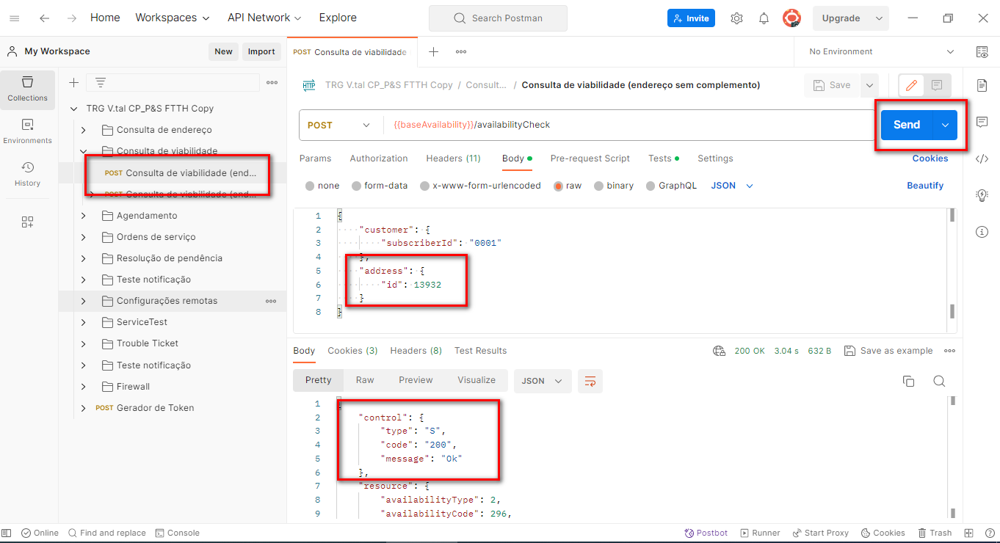

Realiza a consulta da viabilidade, com o AddressID gerado na API de Consulta de Endereço.
Será realizado o check da viabilidade em todo o 'percurso' da fibra, desde as estações telefônicas até a residência do usuário final.
Caso exista viabilidade, informará também qual é a velocidade máxima que pode ser utilizada e retorna o ID da viabilidade
Necessário ter o AddressID gerado na API de Consulta de Endereço:
1.Em Consulta de Viabilidade;
2.Preencha o campo "AddressID";
3.Clique em Send;
4.Ela retornará o tipo de viabilidade e as velocidades disponiveis.
! Video Teórico e Prático